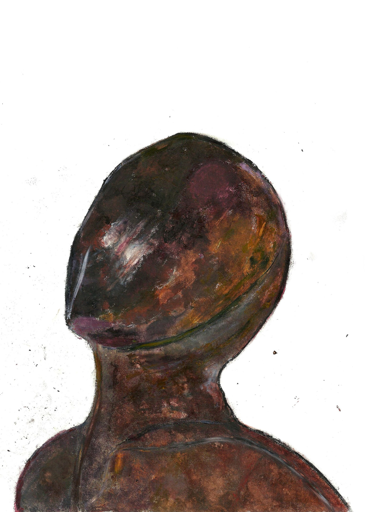

Георгий Филатов

Прочитав о том, что бонусные баллы можно получить за дополнительное оформление
страницы, я задался вопросом: "А что же такое дополнительное оформление ?".
Я пришел к следующим выводам. Вышеописанный вопрос не имеет ответа, поскольку не предоставлены критерии истинности утверждения типа:
"Нечто является дополнительным оформлением" и из этого следует, что вопрос который я поставил выше - бессмысленный.
Вверху я привел краткое доказательство того, почему вопрос об оформлении не имеет прямого ответа, значит дать ответ на
него мы можем только арбитрарно. Исходя из данных предпосылок, я решил,
что это мое краткое рассуждение о том что же такое "дополнительное оформление"аш
будет являться, собственно, дополнительным оформлением.
Контакты:
Страничка vkontakte
GitHub
Телефон: +79150535722
E-mail: gyufilatov@edu.hse.ru